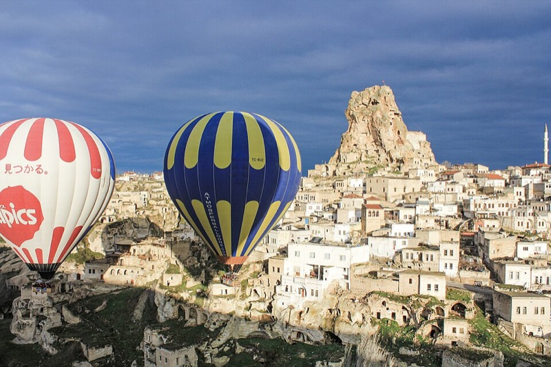
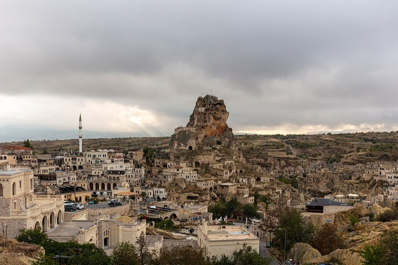
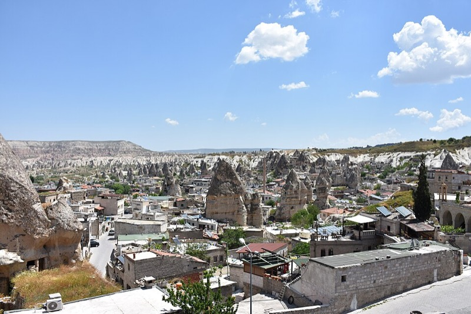

Истанбул 8 хүний аялал
Зургаан бүтэн өдөр, долоо дахь өдөр нь өглөө. Дөрвөн өдөр Истанбул, дунд нь Пүрэв оройноос Бямба үд хүртэл Каппадокийн Ортахисар: Баасны үүрээр агаарын бөмбөлөг, Гөремегийн хадны сүмүүд, хөндийнүүд, агуйн буудал. Өдөр бүр хаана, хэдэн цагт, ямар трам, автобус, гатлага онгоц, нислэгээр яаж явахыг алхам алхмаар бичсэн. Цагийг бодит ажиллах цаг, мөргөлийн цаг, 2026 оны хуваарь, салхины прогноз дээр тулгуурлав. Зардал олон улсын жуулчдын дундаж буюу "тав тухтай" түвшин.

Цаг агаар: Истанбулд эхний 3 өдөр бороо, Каппадокид Баасны үүр хамгийн тайван
Open-Meteo-гийн 10.13-ны прогноз (Истанбул ба Ортахисар). Истанбулд Лхагва, Пүрэв хүчтэй бороо, 33–35 км/ц салхи тул Лхагвыг ордон, зах, хамамд, Пүрэвийн өглөөг Топкапыд өнгөрөөнө. Бөмбөлөг үүрийн салхи ойролцоогоор 20 км/ц-ээс дээш, бороо, манантай үед нисдэггүй. Ортахисарын үүрийн (06–08 цаг) прогноз: Лх 15–23 км/ц (нисэхгүй), Пү 3–6 км/ц гэвч бороо 45%, Ба 16: 4 км/ц, бороо 11%, долоо хоногийн хамгийн сайн, Бя 17: 10–13 км/ц (нөөц өдөр), Ня 6–11 км/ц. Тиймээс бөмбөлгийг Баасан үүрээр, нөөцийг Бямба үүрээр тавьж, Пүрэв орой нисч очно. Истанбулын Бямба (бороо 78%, 15 мм) Каппадокид нарлаг 22° байна.
Истанбулд нар мандах 07:13 → 07:21, жаргах 18:27 → 18:16; Ортахисарт мандах 06:50, жаргах 18:01 (бөмбөлөг агаарт байхад мандана). Каппадокийн үүр 8–10°, өдөр 18–22°. Юу авч явах: шүхэр (Их захаас 150–300 ₺), ус нэвтрүүлдэггүй гутал, салхины куртка, сүмд зориулсан алчуур. Өдөр 15–19°, орой 12–16°. Прогнозыг өглөө бүр дахин шалгаарай: yr.no Истанбул, Ортахисарын салхи: windy.com.
Тээвэр: яаж явах вэ, алхам алхмаар
Машин түрээслэхгүй. Буудал Султанахметын трамын буудлаас 10 минут, Эминөнүгийн гатлага онгоцны хөлгүүдээс трамаар 10 минут. Истанбулын түгжрэл, зогсоол, мөн Монголын кирилл үнэмлэхэд олон улсын үнэмлэх (IDP) заавал. Бүх өдөр трам + гатлага онгоц + алхалт, орой нэг, хоёр удаа такси, нисэх буудал руу урьдчилан захиалсан ван.


1. Истанбулкарт: 3 картаар 8 хүн яаж явах
- Трам, метро, автобус, гатлага онгоц бүгд нэг карт. Нэг картыг хаалган дээр дараалан хэд хэдэн удаа уншуулж болно (хүн бүрт нэг удаа): 3+3+2 гэж орно. Нэг уншилт 46.20 ₺, 2 цагийн дотор шилжилт 34.40 ₺ (зөвхөн эхний хүнд тооцогдоно гэж бод).
- Цэнэглэх: трамын буудал, хөлөг бүрийн шар "Biletmatik" машин, дэвсгэрт (хариулт өгдөггүй, картын үлдэгдэл болно) эсвэл банкны карт. Картанд өдөрт 3 хүний 400–500 ₺ хийвэл хангалттай.
- Гатлага онгоцонд хаалгаар картаа уншуулаад л сууна; хуваарь sehirhatlari.istanbul эсвэл Google Maps "Transit".
- Шилжилтийн дүрэм: трам → гатлага онгоц 2 цаг дотор бол хямдарна. Турyol, Dentur (хувийн) завь зарим нь Истанбулкарт авна, зарим нь бэлэн/карт.
2. T1 трам: буудлаас хамгийн ойрын буудал "Sultanahmet"
Буудлаас гарч Küçük Ayasofya Caddesi-ээр өгсөж (Хөх сүм рүү) Хипподромын талбай, трамын буудал Divan Yolu гудамжин дээр: 10 мин. Трам 3–6 мин тутамд, 06:00–24:00. Хоёр чиглэл:
3. Эминөнү: гатлага онгоцны хөлгүүд (трамаас буугаад 2 мин)
Трамаас бууж замыг гүүрний доогуур гарч усан талд очно. Хөлгүүд зүүнээс баруун тийш (Галатагийн гүүрнээс холдох дарааллаар): Haliç (Алтан эврийн шугам: Фенер, Балат, Эюп) · Turyol / Dentur хувийн завь (Галатагийн гүүрний яг хажууд: Арлууд, Босфорын 90 минутын тойрог) · Üsküdar · Kadıköy · Boğaz Hattı (Şehir Hatları Босфорын тойрог). Хөлөг бүрийн хаалган дээр чиглэлийн нэр том бичээстэй, хуваарийн самбартай.
4. Такси ба ван
- Шар такси, "TAKSİ" гэрэлтэй. BiTaksi апп (карт холбож) хамгийн найдвартай; гудамжнаас авбал "taksimetre" гэж хэлж тоолуур асаалгана. Эхлэл ~35 ₺ + 23.6 ₺/км, доод 100 ₺. 8 хүн = 2 такси (4+4). Таксим/Каракөй – Султанахмет ≈ 250–350 ₺ нэг машин.
- Нисэх буудал руу 8 хүний ван: буудал эсвэл welcomepickups.com / kiwitaxi-аар урьдчилан, ≈ 3,500 ₺, 60–75 мин. Yusuf Aşkın Sokak нарийн тул ван Küçük Ayasofya Caddesi дээр хүлээнэ.
- Нийтийн тээврээр нисэх буудал: Sultanahmet трам → Aksaray (Bağcılar чиглэл, 4 буудал) → Havaist HVL-1 автобус (Aksaray Havaist буудал, 20–30 мин тутам, 265–355 ₺, Истанбулкарт/банкны карт, бэлэн мөнгө авахгүй), 70–90 мин.
Ажиллах цаг, мөргөлийн цаг, тасалбар
Сүмүүд (Ая София, Хөх сүм, Сүлеймание, Рүстем Паша) мөргөлийн цагаас 30 мин өмнө, 30 мин дараа жуулчин оруулдаггүй. Диянетийн 2026.10 сарын Истанбулын цаг:
| Өдөр | Өглөө (Güneş) | Үд (Öğle) | Үдээс хойш (İkindi) | Орой (Akşam) | Шөнө (Yatsı) | Жуулчны цонх |
|---|---|---|---|---|---|---|
| Лх 14 | 07:07 | 12:55 | 16:01 | 18:33 | 19:52 | 09:00–12:20, 13:30–15:30, 16:40–18:00 |
| Пү 15 | 07:08 | 12:55 | 16:00 | 18:32 | 19:51 | адил |
| Ба 16 | 07:09 | 12:55 (Баасны мөргөл) | 15:58 | 18:30 | 19:49 | Ая София, Хөх сүм 12:00–14:30 хаалттай; Хора Баасан бүхэлдээ хаалттай |
| Бя 17 | 07:10 | 12:55 | 15:57 | 18:29 | 19:48 | адил |
| Ня 18 | 07:11 | 12:54 | 15:56 | 18:27 | 19:47 | адил |
| Да 19 | 07:13 | 12:54 | 15:55 | 18:26 | 19:45 | адил |
| Газар | Ажиллах цаг (10 сар) | Хаалттай | ₺ | ₮ | Манай өдөр |
|---|---|---|---|---|---|
| Ая София, дээд галерейн жуулчны зам | 09:00–19:30 орчим, сүүлийн тасалбар 1 цагийн өмнө; мөргөлөөр завсарлана | Ба 12:00–14:30 | 1,270 | 93,000 | Лх 14, 09:00 |
| Хөх сүм | 08:30–18:00, мөргөлөөр завсарлана | Ба 12:00–14:30 | 0 | 0 | Лх 14, 10:30 |
| Цөөрөм (Basilica Cistern) | 09:00–19:00 (сүүлийн тасалбар 18:00); 19:30–22:00 "шөнийн" 3,000 ₺ | — | 1,950 | 142,000 | Лх 14, 11:30 |
| Топкапы + Харем + Ая Ирине | 09:00–18:00, сүүлийн тасалбар 17:00, Харем 45 мин эрт хаана | Мягмар | 2,750 | 200,000 | Пү 15, 09:00 |
| Археологийн музей | 09:00–18:00, тасалбар 17:30 хүртэл; Паалантай павильон засварт | Даваа | 760 | 55,000 | алгасна (Каппадоки) |
| Галата цамхаг | 08:30–23:00 (сүүлийн орох 22:00) | — | 1,520 | 111,000 | алгасна; хүсвэл Ня орой |
| Hodjapasha дервишийн сема | Өдөр бүр 19:00, хаалга 18:30, 60 мин | — | ≈ 1,400–1,800 | 100–130 мян. | Ня 18, 19:00 |
| Босфорын богино тойрог, Şehir Hatları | Эминөнү Boğaz Hattı хөлгөөс 14:30 (хөлөг дээр шалга), 2 цаг | — | 340 | 25,000 | Ня 18, 14:30 |
| Долмабахче ордон (Selamlık + Harem) | 09:00–17:00, тасалбар 16:00 хүртэл, ихэвчлэн эрт дуусдаг | Даваа | 2,000–2,650 | 146–193 мян. | Ня 18, 09:00 |
| Cağaloğlu Hamamı, эмэгтэйчүүдийн хэсэг | 08:00–22:00 (захиалга заавал) | — | 2,000–4,500 | 146–330 мян. | Лх 14, 18:00 |
| Их зах | 08:30–19:00 | Ням | 0 | 0 | Лх 14, Да 19 |
| Амтлагчийн зах | 08:00–19:30, Ням 09:30–19:00 | — | 0 | 0 | Лх 14, Да 19 |
| Хора (Kariye) сүм, мозайк | 09:00–18:00, мөргөлөөр завсарлана | Баасан | ≈ 1,150 (20 €) | 84,000 | багтахгүй |
| Арлуудын гатлага, Turyol Эминөнү → Бүйүкада | 08:40, 09:40, 10:40, 11:40 …; буцах 14:15, 15:15, 16:15, 17:00, 18:00 | — | ≈ 150–200 | 11–15 мян. | хувилбар, Ня 18 |
| Каппадоки: агаарын бөмбөлөг, стандарт нислэг | Буудлаас 05:00–05:30 авна, нислэг ≈ 06:15–07:30, 60 мин; иргэний нисэх салхи, манангаар цуцалдаг | — | ≈ 11,500–16,000 (200–280 €) | 840 мян.–1.2 сая | Ба 16 үүр, нөөц Бя 17 |
| Гөреме задгай музей (UNESCO), хадны сүмүүд | 08:00–19:00 (10 сар, сүүлийн орох 18:15 орчим); Karanlık Kilise нэмэлт | — | ≈ 1,150 (20 €) + 340 (6 €) | 84,000 + 25,000 | Ба 16, 09:45 |
| Ортахисар цайз, Панжарлык сүм | 08:00–19:00 орчим; цайз шаттай, 86 м | — | ≈ 150 + 100 | 18,000 | Бя 17 өглөө |
| Нислэг Turkish Airlines IST ⇄ NAV (Nevşehir Kapadokya) | IST→NAV 07:45, 09:35, 13:55, 16:10, 19:00; NAV→IST 08:30, 10:20, 15:55, 22:50 (сүүлийнх байнга цуцалдаг) | — | ≈ 4,000–5,500 нэг тал | 290–400 мян. | Пү 16:10 → Бя 15:55 |
Museum Pass (105 €) Ая София галерей, Цөөрөм, Долмабахчег багтаадаггүй тул тасалбарыг хаалган дээрээс (эсвэл muze.gov.tr) авна. Онлайн "skip-the-line" борлуулагчид 2–3 дахин үнэтэй. Цагууд 2026 оны аравдугаар сарын байдлаар, гарахын өмнө Google Maps дээр нэг удаа шалга.
Каппадоки: Ортахисар, агаарын бөмбөлөг (Пү 15 орой – Бя 17 үд)
Истанбулын буудал төлөгдсөн тул том чемоданаа тэнд үлдээж, 2 шөнийн жижиг цүнхтэй нисч очно. Ортахисар нь Гөреме, Үргүп, Үчхисарын яг дунд, цайзтай, жуулчин цөөн, агуйн буудлууд Гөремегээс хямд. Бөмбөлгийн компаниуд бүх хотоос авдаг тул Ортахисараас нисэхэд ямар ч ялгаагүй.



Өнөөдөр (Мя 13) захиалах дараалал
- Нислэг: Turkish Airlines Пү 10.15 TK2086 IST 16:10 → NAV 17:30, Бя 10.17 TK2007 NAV 15:55 → IST 17:25, 8 суудал (нэг тал ≈ 4,000–5,500 ₺). Хямд хувилбар AJet Sabiha Gökçen (SAW) → NAV ≈ 2,200–3,200 ₺, гэхдээ SAW буудлаас 1.5 цаг, Азийн тал; TK-г IST-ээс авах нь хялбар. Nevşehir (NAV) гэж сонго, Kayseri (ASR) 75 км хол.
- Буудал (4 хоёр хүний өрөө, 2 шөнө): Hezen Cave Hotel 📍 (цайз харсан дэнж, өглөөний цай, ≈ 7,000–9,000 ₺ өрөө/шөнө), Alfina Cave Hotel 📍 (том, 4,500–6,000 ₺), Queen’s Cave Cappadocia 📍. Дүүрсэн бол Үргүп (10 мин): Yunak Evleri 📍. Захиалахдаа "balloon pickup", нисэх буудлын ван, Пүрэв 19:30 оройн хоолыг хамт асуу.
- Бөмбөлөг Ба 10.16 үүр, 8 хүн, стандарт 60 мин: Royal Balloon, Butterfly Balloons (дээд зэрэг, 16-20 хүний сагс, ≈ 280–350 €), Türkiye Balloons, Voyager Balloons, Kapadokya Balloons (стандарт 200–260 €, 20–28 хүний сагс). Захиалгад заавал: "full refund if cancelled by Civil Aviation", нөөц өдөр Бямба 10.17, буудлаас авах цаг. Буудлаар захиалахад ихэвчлэн ижил үнэ. 130 €-оос хямд санал бол сагс хэт том эсвэл найдваргүй.
- Хувийн ван + хөтөч Ба 09:30–18:30 (8 хүн, "Улаан тур"-ын зам + Улаан хөндийн нар жаргах): буудлаар эсвэл GetYourGuide "private Cappadocia tour" ≈ 400–500 € ван (50–60 € хүн). Хамтарсан "Red Tour" 45–55 € хүн, гэхдээ 8 хүн тусдаа ван авсан нь ижил үнэтэй, илүү чөлөөтэй.
- Istanbul буудал: Пү–Бя чемодан хадгалах, Бя 19:00 буцаж ирэхээ хэлнэ. Matbah-ийн захиалгыг Лх 20:15-аас Бя 20:00 руу, Neolokal-ийг Лх 20:15 руу шилжүүлнэ (Ням, Да хаалттай).
Бөмбөлгийн өглөө яаж болдог вэ
- 05:00–05:30 буудлаас ван авна (компани Пүрэв орой цагийг мессежээр хэлнэ). Оффист цай, бисквит, 30 мин бөмбөлөг хийлэхийг харна.
- 06:15–07:30 нислэг 60 мин, 100–150 бөмбөлөг зэрэг хөөрнө, нар 06:50-д агаарт мандана. Газардахад сагс хажуу тийш хэвтэж болзошгүй: суугаад олсноос барина. Дараа нь шампанск/жүүс, гэрчилгээ. 08:00 буудалд.
- Хувцас: үүр 8–10°, давхар хувцас, салхины куртка, малгай; шатаагч толгой дээр халуун. Хавтгай хаалттай гутал, урт өмд (сагс руу 1.2 м авирна), юбка, өсгийтэй гутал биш. Утас зүүлттэй, цэнэгтэй.
- Цуцлалт: Иргэний нисэх 05:00 орчим шийднэ (салхи ≈ 20+ км/ц, бороо, манан). Цуцлагдвал компани Бямба 06:00-д автоматаар шилжүүлнэ; 15:55-ын нислэгт багтана. Хоёулаа цуцлагдвал мөнгө буцаана. Нисэхгүй байсан ч буудлын дэнжээс бусдын бөмбөлгийг үүрээр харна.
- Эрүүл мэнд: жирэмсэн, саяхан мэс засал хийлгэсэн, хүнд хөдөлгөөний бэрхшээлтэй бол нисдэггүй; өндөр гэж айх шаардлагагүй (сагс гүн, хөдөлгөөн зөөлөн).
Ортахисар, ойр орчим
- Ортахисар цайз 📍: 86 м хад, шат, оройгоос Эржиес уул, Гөреме, Үчхисар. Хуучин хороолол: чулуун байшин, нимбэг хадгалдаг агуйнууд, Культур музей (Ethnography), кафетай талбай.
- Панжарлык сүм, хөндий 📍: 11-р зууны фрескотой сүм, улбар шар хадтай тайван хөндий, 60–90 мин хөнгөн алхалт, жуулчин бараг байхгүй. Халлач хийд 📍 3 км.
- Гөреме задгай музей 📍 (UNESCO, 10–12-р зууны хадны сүм, хийд, фреск; Karanlık Kilise хамгийн сайн нь, нэмэлт тасалбар), 📍 Пашабаа, 📍 Деврент, 📍 Үчхисар цайз, 📍 Улаан хөндийн нар жаргах цэг, 📍 Аванос (шавар ваар).
- Хоол: Tandır Restaurant 📍 (Ортахисарын төв, тандырын хурга, testi kebab, 600–800 ₺), Ziggy’s 📍 (Үргүп, такси 10 мин, meze сет, 1,000–1,200 ₺, захиалга), Dibek 📍 (Гөреме, testi kebab 2–3 цагийн өмнө захиалдаг, 700–900 ₺), Seten 📍 (Гөреме, орчин үеийн Анатоли).
- Тээвэр: нисэх буудал NAV → Ортахисар 40 км, 40 мин: буудлын ван 8 хүн ≈ 3,000–3,500 ₺ (400 ₺/хүн), хамтарсан шаттл ≈ 600 ₺/хүн (Cappadocia Express). Ортахисар ↔ Гөреме, Үргүп такси 300–400 ₺. Хотын автобус цөөн тул ван, такси.
Өдөр бүрийн хөтөлбөр

Мягмар 10.13 · Уулзалт, хөршийн орой
бороо 95%19°/16°, нар жаргах 18:27- Ирэх танхимаас гарч -2 давхар, "Havaist" заалтаар бусын буудал. HVL-1 Aksaray автобус, 20–30 мин тутам. Төлбөр Истанбулкарт эсвэл банкны карт (бэлэн мөнгө авахгүй). Картгүй бол нисэх буудлын метроны үүдэнд Истанбулкарт машин бий. 70–90 мин
- Aksaray буугаад замын нөгөө тал, T1 трам "Aksaray" буудал, Kabataş чиглэл. 4 буудал: Laleli → Beyazıt → Çemberlitaş → Sultanahmet. 12 мин
- Sultanahmet-ээс Хөх сүмийн баруун талаар Küçük Ayasofya Cd. уруу, Yusuf Aşkın Sk. 10 мин

Лхагва 10.14 · Султанахмет, захууд, хамам
хүчтэй бороо 27 мм, салхи 3318°/16°, бүх зүйл буудлаас алхах зайд- Sultanahmet трам, Bağcılar чиглэл, 2 буудал → Beyazıt-Kapalıçarşı. 5 мин
- Буугаад ар тал руу 2 мин, захын Nuruosmaniye эсвэл Beyazıt хаалга.
- Захын Mahmutpaşa хаалгаар гарч Mahmutpaşa Yokuşu уруудан (хямд хувцасны гудамж) Амтлагчийн зах хүртэл 12 мин, эсвэл трам Beyazıt → Eminönü (Kabataş чиглэл, 5 буудал, 15 мин).
- Амтлагчийн захын ар талаас Hasırcılar Cd.-гийн дэлгүүрүүдийн дундуур нарийн шатаар Рүстем Паша сүм 📍 (Синан, 1563; Изникийн паалангийн шилдэг, үнэгүй; 16:40-өөс нээлттэй).
- Хамамаас Sultanahmet трам 7 мин, Kabataş чиглэл, 4 буудал → Karaköy. 12 мин
- Галата гүүрний эсрэг талын Bankalar Cd. 11, SALT Galata барилга, 5 мин. Бороотой, ядарсан бол хамамаас 2 такси 250 ₺.
Хялбар хувилбар: хамамаас 5 мин Matbah 📍 (Османы ордны жор, 1,000 ₺); тэгвэл Matbah-ийг Бямба орой биш Лхагвад. ≈ 4,000 ₺
Пүрэв 10.15 · Топкапы, нислэг, Ортахисар
Истанбул бороо 26 мм17°/15°; Ортахисар орой 12°, Ба үүр 9°- 2 такси (BiTaksi эсвэл буудлаар дуудуулна), 50 км, 50–60 мин, машин ≈ 1,100–1,400 ₺ (хүнд 325). Урьдчилан захиалсан 8 хүний ван ≈ 3,000 ₺. Havaist (Aksaray) удаан, 2 цаг тул үгүй.
- IST, дотоодын нисэх (Domestic, 3-р давхрын зүүн тал). Бүртгэл 15:25-д хаана, 14:30-д ирнэ; онлайн бүртгэл (апп) урьд орой. Шингэн 100 мл дүрэм, гар ачаа 8 кг.
Баасан 10.16 · Агаарын бөмбөлөг, Гөреме, хөндийнүүд
бороо 11%, үүрийн салхи 4 км/ц18°/9°, нар мандах 06:50, жаргах 18:01Бямба 10.17 · Ортахисар, Панжарлык, Истанбулд буцна
Каппадоки нарлаг 22°, Истанбул орой бороо 78%22°/13° → Истанбул 14°/12°Хувилбар: Баасан бөмбөлөг амжилттай бол Бямба Истанбулд хагас өдөр авах хүсэлтэй бол TK2003 10:20 → 11:50 (тэгвэл цайз, Панжарлыкийг Баасны турын оронд). TK2091 22:50 долоо хоногт 3 удаа цуцлагдсан тул авахгүй.
- Ачаа авч гарна, таксины зогсоол (баруун гарц). 2 такси Küçük Ayasofya, Yusuf Aşkın Sk. 16; Бямбын орой замын түгжрэл, 60–75 мин, машин ≈ 1,300 ₺.
- Нийтийн тээврээр: HVL-1 Havaist → Aksaray (75–90 мин, 265–355 ₺) → T1 трам Kabataş чиглэл 4 буудал → Sultanahmet + 10 мин, нийт 2 цаг. Бороотой тул такси.

Ням 10.18 · Долмабахче, Ортакөй, Босфорын круиз, Сүлеймание, дервиш
бороо 42%, бага17°/12°, Их зах хаалттай, сүүлчийн бүтэн өдөр- Sultanahmet трам, Kabataş чиглэл, эцсийн буудал → Kabataş. 25 мин
- Буугаад далайн эрэг дагуу зүүн тийш Dolmabahçe Cd., ордны Saltanat хаалга (цагийн цамхагтай). 8 мин
- Ortaköy буудлаас 22/25E/40 "Kabataş" чиглэл → Kabataş. 15 мин
- Kabataş трам, Bağcılar чиглэл, 5 буудал → Eminönü. 15 мин
- Хөлгүүдийн хамгийн зүүн зах, Кадыкөйн хөлгийн цаана Boğaz Hattı хөлөг, 7 мин. Тасалбар кассаас 340 ₺, 14:00 хүртэл.
Тэр өдөр Şehir Hatları явахгүй бол: Галатагийн гүүрний хажуугийн Turyol / Dentur Avrasya 90 минутын тойрог, цаг бүр, 300–400 ₺.
Хувилбар: Истиклалын Asmalı Cavit 📍 meyhane (трам Karaköy → Tünel фуникулер, 25 мин; 1,200–1,500 ₺), буцах такси 300 ₺. ≈ 1,100 ₺

Даваа 10.19 · Сүүлчийн худалдаа, нисэх буудал
бороо 0 мм19°/16°, TK236 18:30- Sultanahmet трам, Bağcılar чиглэл, 4 буудал → Aksaray. 12 мин
- Aksaray Havaist буудал (трамын буудлын хажууд, "Havaist" самбар), HVL-1 İstanbul Havalimanı, 20–30 мин тутам, 265–355 ₺, Истанбулкарт/карт. 70–90 мин
Төсөв: хүн бүрт, олон улсын жуулчны дундаж
Истанбулын 4 өдөр "тав тухтай" түвшинд (өдөрт 100–130 €, байргүй), дээр нь Каппадокийн 2 шөнө: нислэг, агуйн буудал, бөмбөлөг, хувийн ван. Бөмбөлөг ганцаараа нийт зардлын 1/6. Үнэ 1 € = 57 ₺, 1 ₺ = 73 ₮ ханшаар, 10.13-ны байдлаар.
| Зүйл | ₺ | € | ₮ |
|---|---|---|---|
| Истанбулын тасалбар: Ая София, Цөөрөм, Топкапы, Долмабахче | 8,600 | 151 | 628,000 |
| Хамам (Cağaloğlu) + дервишийн сема | 5,100 | 89 | 372,000 |
| Босфорын круиз | 340 | 6 | 25,000 |
| Хотын тээвэр (трам, автобус, гатлага ≈ 18 уншилт) + такси хуваалт + IST такси 2 удаа + Даваагийн ван | 3,000 | 53 | 219,000 |
| Нислэг IST → NAV → IST, Turkish Airlines, 2 хоногийн өмнө | 9,500 | 167 | 694,000 |
| Агуйн буудал Ортахисар, 2 шөнө, 2 хүний өрөө хуваалт, өглөөний цайтай | 8,500 | 149 | 621,000 |
| Агаарын бөмбөлөг, стандарт 60 мин | 12,500 | 219 | 913,000 |
| Каппадокийн хувийн ван + хөтөч (8-д хуваалт) + Гөреме музей, Karanlık Kilise, цайз, Панжарлык | 5,000 | 88 | 365,000 |
| NAV нисэх буудлын ван 2 удаа | 800 | 14 | 58,000 |
| Хоол 6 өдөр (өглөө 250, үдийн 500, орой 1,000 дундаж) + Neolokal | 15,000 | 263 | 1,095,000 |
| Кофе, цай, ус, амттан, жижиг зардал | 2,500 | 44 | 183,000 |
| Нөөц ≈ 6% | 4,500 | 79 | 329,000 |
| Нийт (бэлэг, худалдаа ороогүй) | ≈ 75,000 | ≈ 1,320 | ≈ 5.5 сая |
Хэмнэлттэй хувилбар (≈ 59,000 ₺, 4.3 сая ₮)
- Нислэг AJet Sabiha Gökçen-ээс (SAW хүртэл 1.5 цаг такси): −3,500 ₺
- Хувийн ваны оронд хамтарсан Red Tour: −1,200 ₺
- Энгийн агуйн буудал (Alfina, Burcu Kaya): −3,000 ₺
- Neolokal-ийн оронд Karaköy Lokantası: −2,800 ₺
- Хамам Чемберлиташ энгийн багц 1,500 ₺: −2,000 ₺
- Ая София 1-р давхарт мөргөлийн хаалгаар үнэгүй: −1,270 ₺
- Үдийн хоол lokanta/гудамжны хоол: −1,500 ₺
Бөмбөлгөөс хэмнэх хэрэггүй: 130 €-оос хямд санал бол 28 хүний сагс, цуцлалтын мөнгө буцаахгүй эрсдэлтэй.
Нэмэлт (хүсвэл)
- Дээд зэргийн бөмбөлөг (Royal/Butterfly, 90 мин, 12–16 хүний сагс): +5,000–7,000 ₺
- Каппадокид нар жаргах жийп сафари (ATV биш, суугаад): +2,000 ₺
- Hürrem Sultan тансаг хамам: +3,000 ₺
- Хора сүм (Лхагва Их захыг богиносгож таксигаар, 20 €): +1,400 ₺
- Галата цамхаг Ням орой: +1,520 ₺
- Нишанташы худалдаа: хязгааргүй
8 эмэгтэйн бүлэгт зориулсан зөвлөгөө


- Өнөөдөр захиалах (дарааллаар): нислэг TK2086 Пү 16:10 + TK2007 Бя 15:55, Ортахисарын агуйн буудал 2 шөнө, бөмбөлөг Ба үүр (нөөц Бя), хувийн ван + хөтөч Ба; дараа нь Balıkçı Sabahattin (Мя 19:30), Cağaloğlu хамам 8 хүн (Лх 18:00), Neolokal (Лх 20:15), Matbah (Бя 20:00), Hodjapasha дервиш (Ня 19:00), Hamdi (Ня 20:20), нисэх буудлын ван (Да 13:00). Google Maps дээрх WhatsApp дугаараар захиалах нь энгийн; "8 kişi, saat 19:30, rezervasyon" гэж бич.
- Хамам: Cağaloğlu, Hürrem Sultan, Çemberlitaş бүгд эмэгтэйчүүдийн тусдаа хэсэгтэй, эмэгтэй масажчинтай. Kılıç Ali Paşa эмэгтэйчүүдэд зөвхөн 08:00–16:00. Peştemal (алчуур), шаахай өгдөг, дотуур хувцас эсвэл бикини доод хэсэг өмсдөг. Хамамын дараа гадаа хүйтэн тул үсээ хатааж, малгай.
- Сүмийн дүрэм: мөр, өвдөг халхалсан; алчуур; гутлаа тайлж уутанд хийнэ; мөргөлийн цагаас 30 мин өмнө, дараа жуулчин орохгүй (дээрх хүснэгт). Баасан 12:00–14:30 Ая София, Хөх сүм, Хора хаалттай.
- Аюулгүй байдал: Истанбул эмэгтэй бүлэгт аюулгүй хот. Султанахметад "гутал тослогч"-ийн унасан сойз, ресторан руу дуудагч, Таксимд бар руу урих "найрсаг" танихгүй хүн: бүгдээс татгалз. Таксид тоолуур шаард, BiTaksi хэрэглэ. Трам, гатлага онгоцонд цүнхээ урдаа.
- Хуваах: нийтийн касс, нэг хүн карт/такси/цай төлөөд Splitwise-д бичих. Ресторанд нэг hesap авч картаар хуваах нь энгийн. Цайны мөнгө ресторанд 5–10%, хамамд 10%, таксинд дугуйруулна.
- Утас: Google Maps (трам, автобус, гатлага онгоцны бодит цаг: "Transit"), Moovit, BiTaksi, İstanbulkart апп, Getir/Yemeksepeti (хоол хүргэлт буудал руу). Şehir Hatları хуваарь sehirhatlari.istanbul, Turyol turyol.com. Google Translate турк хэлний offline багц татаж ав.
- Цаг агаар солигдвол: борооны өдрийн дотор хөтөлбөрийг нарлаг өдрийн задгай хөтөлбөртэй солиход хялбар. Топкапы Мягмар, Долмабахче/Археологи/Neolokal Даваа, Их зах Ням, Хора Баасан хаалттай. Бөмбөлгийн шийдвэр 05:00-д; windy.com дээр Ортахисарын үүрийн салхийг Пүрэв орой шалга.
- Каппадоки: дотоодын нислэгт паспорт заавал, гар ачаа 8 кг. Агуйн өрөө шөнө сэрүүн (14–16°), халаалт асаалттай эсэхийг шалга. Үүрээр, хөндийд салхи хүйтэн тул дулаан давхар; өдөр 20° нартай тул нарны тос. Хавтгай гутал: музей, цайз бүгд шаттай. Бэлэн мөнгө: жижиг кафе, сүмийн касс заримдаа карт авдаггүй, 2,000 ₺ бэлэн.
- Даваа: ачааг 13:00 хүртэл буудалд хадгалуулахаа урьдчилан хэлж, ванг Ням орой баталгаажуул. 18:30 нислэгт 15:30-аас өмнө бүртгэлд байх.
Холбоосын лавлах: сайт ба газрын зураг
Газар бүрийн албан ёсны сайт (цаг, үнэ, захиалга) ба Google Maps байршил. Хөтөлбөр дотор ч тод нэр бүр дээр дарж орно; 📍 нь газрын зураг.
Үзвэр, ордон, сүм
- Ая София: сайт · газрын зураг 📍
- Хөх сүм: сайт · газрын зураг 📍
- Цөөрөм: сайт · газрын зураг 📍
- Топкапы ордон: сайт · газрын зураг 📍
- Археологийн музей: сайт · газрын зураг 📍
- Галата цамхаг: сайт · газрын зураг 📍
- Долмабахче ордон: сайт · газрын зураг 📍
- Сүлеймание сүм: сайт · газрын зураг 📍
- Рүстем Паша сүм: сайт · газрын зураг 📍
- Хора (Kariye): сайт · газрын зураг 📍
- Күчүк Аясофья сүм: сайт · газрын зураг 📍
- Бүйүкада: сайт · газрын зураг 📍
- Балат, Фенер: сайт · газрын зураг 📍
- Ортакөй: сайт · газрын зураг 📍
- Кадыкөй: сайт · газрын зураг 📍
Хамам, дервиш, зах
- Cağaloğlu Hamamı: сайт · газрын зураг 📍
- Ayasofya Hürrem Sultan: сайт · газрын зураг 📍
- Hodjapasha: сайт · газрын зураг 📍
- Их зах: сайт · газрын зураг 📍
- Амтлагчийн зах: сайт · газрын зураг 📍
- Араста зах: сайт · газрын зураг 📍
Ресторан, кафе
- Balıkçı Sabahattin: сайт · газрын зураг 📍
- Sultanahmet Köftecisi: сайт · газрын зураг 📍
- Matbah: сайт · газрын зураг 📍
- Konyalı: газрын зураг 📍
- Karaköy Güllüoğlu: сайт · газрын зураг 📍
- Hamdi Restaurant: сайт · газрын зураг 📍
- Forno Balat: газрын зураг 📍
- Pandeli: сайт · газрын зураг 📍
- Karaköy Lokantası: сайт · газрын зураг 📍
- Çiya Sofrası: сайт · газрын зураг 📍
- Baylan: газрын зураг 📍
- Neolokal: сайт · газрын зураг 📍
- Milto: газрын зураг 📍
- Asmalı Cavit: газрын зураг 📍
- Hafız Mustafa 1864: сайт · газрын зураг 📍
Тээвэр
- Истанбулкарт: сайт
- BiTaksi: сайт
- Havaist нисэх буудлын автобус: сайт
- Şehir Hatları гатлага онгоц: сайт
- Turyol: сайт
- Босфорын тойрог (Boğaz Hattı хөлөг): сайт · газрын зураг 📍
- Tünel: сайт · газрын зураг 📍
Каппадоки
- Turkish Airlines IST ⇄ NAV: сайт · газрын зураг 📍
- AJet (SAW → NAV): сайт · газрын зураг 📍
- Hezen Cave Hotel: сайт · газрын зураг 📍
- Alfina Cave Hotel: газрын зураг 📍
- Royal Balloon: сайт · газрын зураг 📍
- Butterfly Balloons: сайт · газрын зураг 📍
- Türkiye Balloons: сайт · газрын зураг 📍
- Voyager Balloons: сайт · газрын зураг 📍
- Гөреме задгай музей: сайт · газрын зураг 📍
- Ортахисар цайз: сайт · газрын зураг 📍
- Панжарлык сүм: газрын зураг 📍
- Үчхисар цайз: газрын зураг 📍
- Пашабаа, Деврент: газрын зураг 📍
- Улаан хөндийн нар жаргах цэг: газрын зураг 📍
- Tandır Restaurant: газрын зураг 📍
- Ziggy’s Үргүп: сайт · газрын зураг 📍
- Dibek Гөреме: газрын зураг 📍
- Cappadocia Express шаттл: сайт · газрын зураг 📍
- Ортахисарын салхи (windy): сайт · газрын зураг 📍
Ерөнхий
- Цаг агаар: yr.no
- Мөргөлийн цаг: Диянет
- Музейн тасалбар: muze.gov.tr
- Нисэх буудал: istairport.com · Turkish Airlines захиалга
- Автобусны хуваарь: İETT
- Ханш: XE TRY→MNT
Эх сурвалж
- Цаг агаар: Open-Meteo API, 2026.10.13-ны прогноз (Истанбул 41.01N, 28.98E; Ортахисар 38.62N, 34.86E, цаг тутмын салхи)
- Каппадокийн нислэг: Turkish Airlines хуваарь trip.com статусаар (TK2086, TK2007, TK2003, TK2091), enuygun AJet SAW–NAV үнэ
- Бөмбөлөг: 2026 оны үнэ компаниар, Magnificent Travel 2026, гарын авлага 2026; цуцлалт: салхины мэдээ
- Каппадокийн тасалбар, тур, тээвэр: Гөреме музей, 2026 үнэ, хувийн vs хамтарсан тур 2026, NAV–Ортахисар трансфер, Ортахисар, Панжарлык, цайз
- Мөргөлийн цаг: Диянет, Истанбул 2026.10
- Гатлага онгоцны хуваарь (2026.09.07–2027.06.27 өвлийн тариф): Эминөнү–Бүйүкада (Turyol), Кабаташ–Арлууд, Эминөнү–Кадыкөй, Босфорын тойрог
- Ханш: Wise USD/TRY, XE USD/MNT
- Дундаж зардал: Istanbul costs 2026, food prices 2026
- Тасалбар, цаг: Istanbul Tourist Pass, 2026.05, Entrance fees 2026, Топкапы, Хора, хамам, Hodjapasha, Neolokal цаг
- Тээвэр: TurkicPost 2026.07 тариф, Havaist / Султанахмет 2026, Балат руу автобус
- Ресторан: Каракөй, Кадыкөй, шилдэг ресторан
Зургийн эх сурвалж (Wikimedia Commons, чөлөөт лиценз)
- Istanbul_and_Bosporus_big.jpg
- Istanbul_T1_line_Alstom_Citadis_tram.jpg
- Emin_Kul.jpg
- Simit-2x.JPG
- İstanbul_Yeni_Havalimanı_airport_Dec_2019.jpg
- Sergius_and_Bacchus.jpg
- Hagia_Sophia_(228968325).jpeg
- Topkapı_-_01.jpg
- Balat_houses.jpg
- Dolmabahce_Istanbul_Turkey.jpg
- BuyukadaMainSquare.jpg
- Spice_Bazaar_Istanbul_Feb_2020,_img_2.jpg
- Istanbul_Cagaloglu_hamami_entrance.jpg
- Whirlingdervishes.JPG
- Istanbul_asv2021-11_img41_Grand_Bazaar.jpg
- Kadayıf_Taksim_(4).JPG
- Cappadocia_balloon_trip,_Ortahisar_Castle_(11893715185).jpg
- Castillo_de_Ortahisar,_Capadocia,_Turquía,_2024-10-01,_DD_01-03_HDR.jpg
- Göreme_town_and_valley_2015.JPG